Online · 6 weken · kleine klas
Online cursussen
Op het overzicht van de online cursussen lees je hoe het werkt en wat het kost, en kies je de cursus die bij je past.
Nu te volgen Grip op schilderen
Schilderen, tekenen, kijken en ontdekken
Voor beginners en gevorderden die verder willen dan het uitvoeren van een opdracht: leer scherper kijken, krijg grip op techniek en vind je eigen vrijheid als maker.
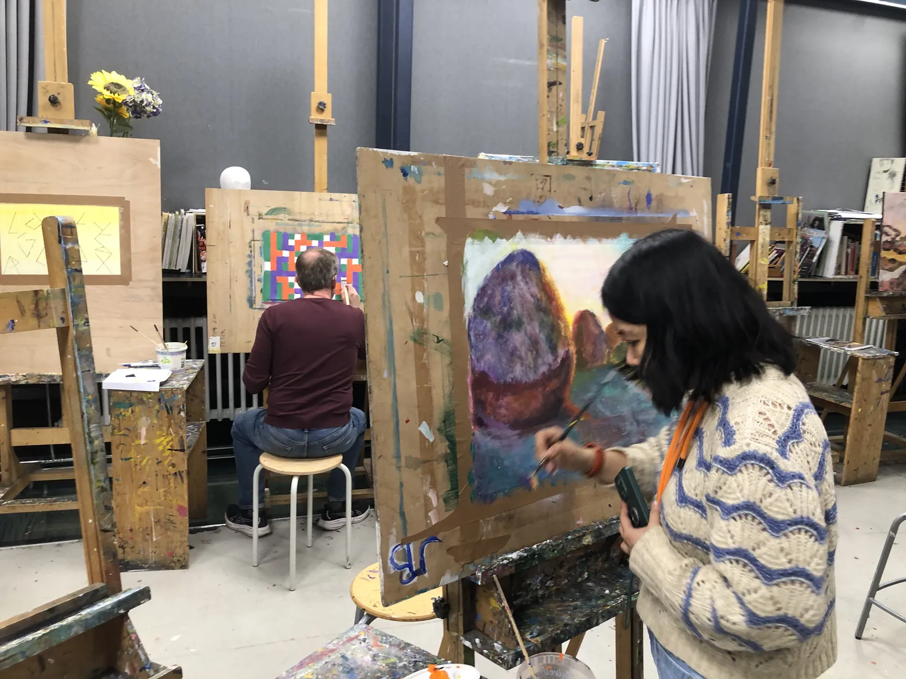
Nieuw Online cursussen Zes weken schilderen in een kleine online klas, thuis of in je eigen atelier. Bekijk de online cursussenNieuw · Online cursussen
Naast de lessen in het atelier kun je nu ook online les volgen, thuis of in je eigen atelier.
Online · 6 weken · kleine klas
Op het overzicht van de online cursussen lees je hoe het werkt en wat het kost, en kies je de cursus die bij je past.
Nu te volgen Grip op schilderen
In het atelier
De lessen bewegen mee met je niveau en ontwikkeling. Actuele data, prijzen en betaling lopen via de officiële cursuspagina's van De VAK en IAC.
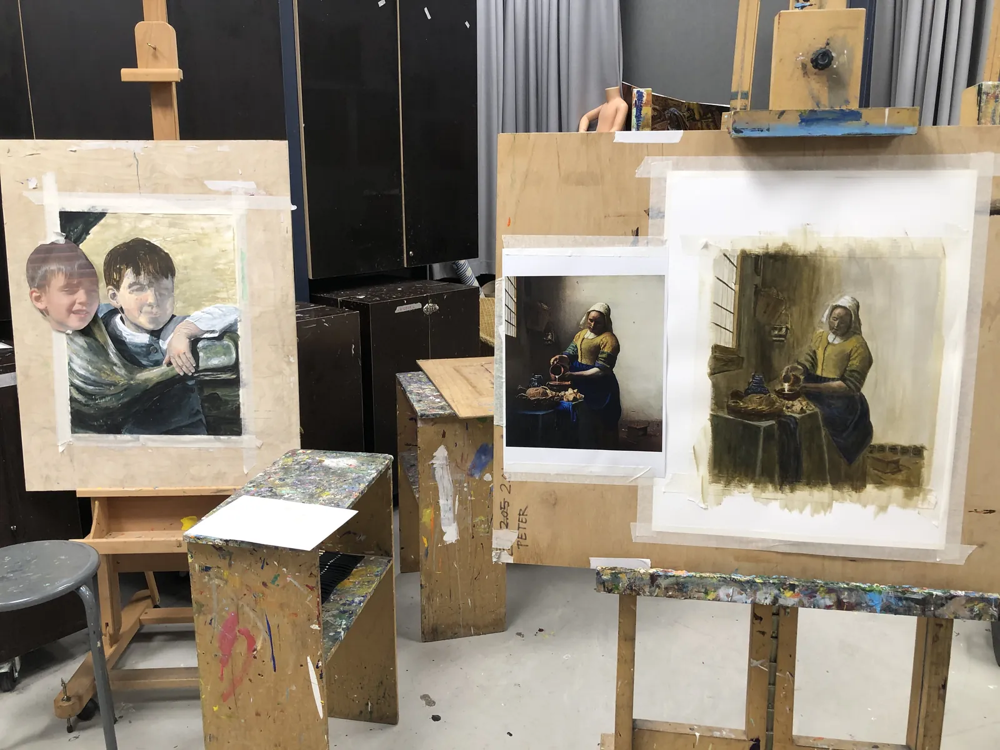
De VAK DelftDonderdagmiddag
Experimenteer, ontdek je eigen beeldtaal en ontwikkel een persoonlijk handschrift.
Past bij beginners en gevorderden die vrijer willen werken
Abstract, figuratief en realistisch werk komen samen via dezelfde bouwstenen: lijn, vlak, verhouding, licht en kleur.
Je werkt aan compositie, kleur, materiaal, eigen keuzes en groepsbespreking.
 De VAK Delft
De VAK Delft
Vrijdagmiddag
Abstract hoeft niet moeilijk of afstandelijk te zijn: leer kijken naar lijn, vlak, compositie, licht en kleur.
Past bij iedereen die abstract wil leren kijken en maken
Je gebruikt opdrachten en kunstgeschiedenis om tot eigen abstract werk te komen.
Je werkt aan oefeningen, persoonlijke wensen en inspiratie uit kunstgeschiedenis.
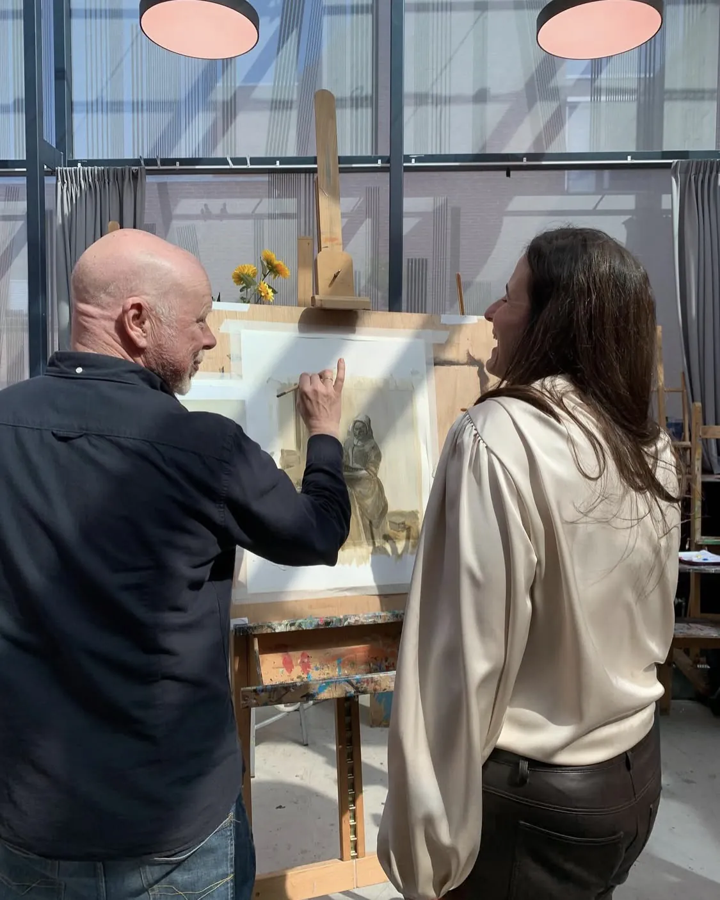
De VAK DelftDonderdagavond
Voor wie verder wil bouwen aan eigen werk, techniek, materialen en ondergronden.
Past bij cursisten met ervaring die willen doorgroeien
Thema's geven onverwachte invalshoeken op stilleven, landschap en portret.
Je werkt aan compositie, vorm, restvorm, kleurschema en contrastwerking.
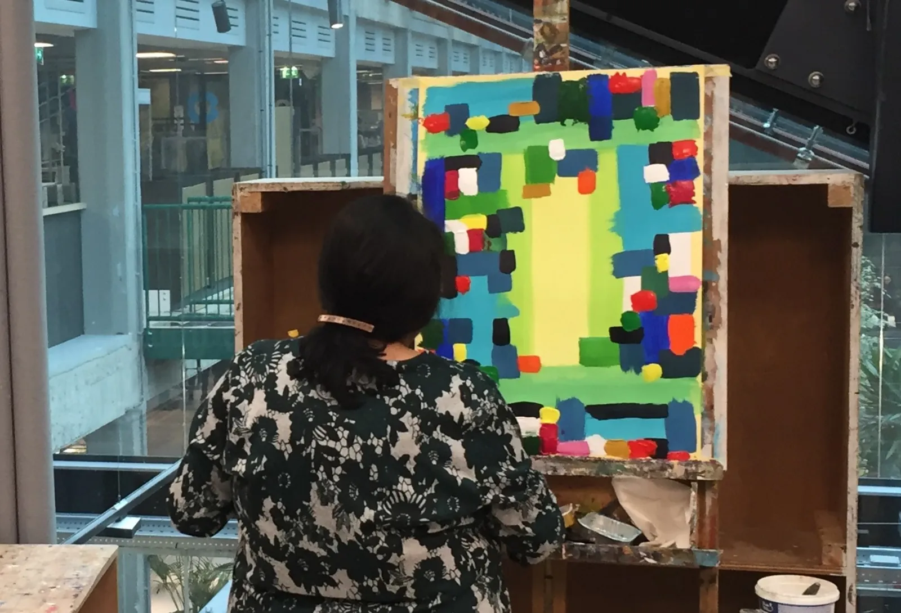
IAC Den HaagWoensdagmiddag
Verdiep je in olieverf, opbouw en schildertechniek.
Past bij makers die met olieverf en schilderkundige opbouw willen werken
De praktische informatie en inschrijving lopen via IAC Den Haag.
Je werkt aan materiaalbeheersing, toonwaarde, kleur en een stevig schilderproces.
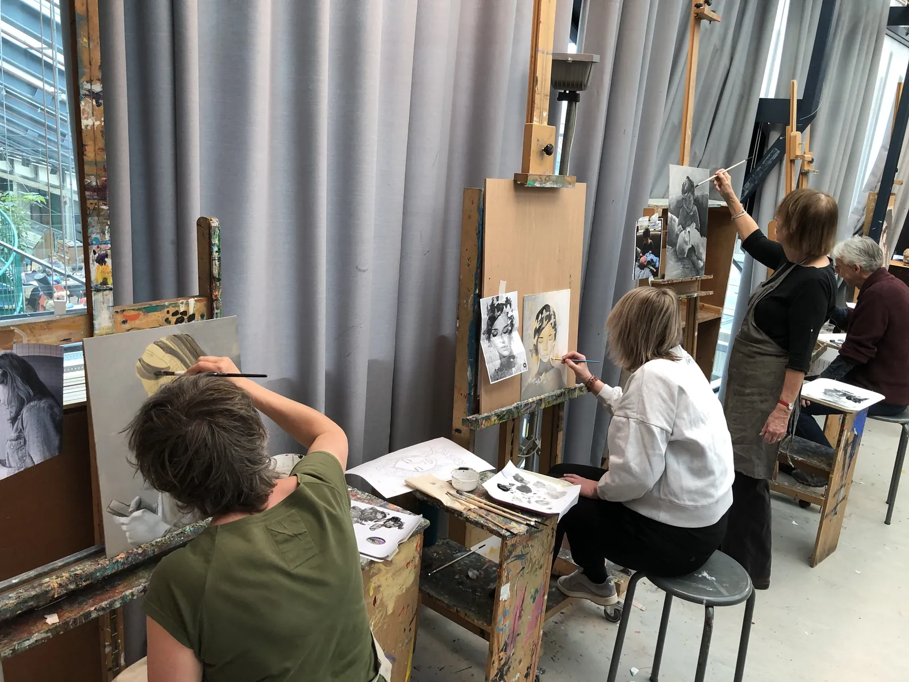
Op aanvraagIn overleg
Van modeltekenen tot een lezing kunstgeschiedenis, ook op een thema naar keuze.
Gegeven Masterclass Grisaille, Picasso, erotiek in de kunst
Nu te boeken bij De VAK
Masterclass Witje schilderenSchilderen alsof het een werkelijk reliëf is: een klassieke trompe-l'oeiltechniek in grijstinten, met acrylverf.
Bekijk en meld je aanBij de Masterclass Grisaille behandelen we de techniek van de oude meesters: eerst tekening, dan licht en donker, daarna kleur. Andere workshops kunnen vertrekken vanuit een kunstenaar, een periode, een onderwerp of een praktische teken- of schildervraag.
In overleg pas ik een workshop aan op de groep, de gelegenheid of een specifieke vraag.
Cursisten exposeren ook
De lessen blijven niet altijd binnen het atelier. Cursisten tonen hun werk in presentaties, tentoonstellingen en eigen projecten, van OPEN Delft tot kleine galeries.
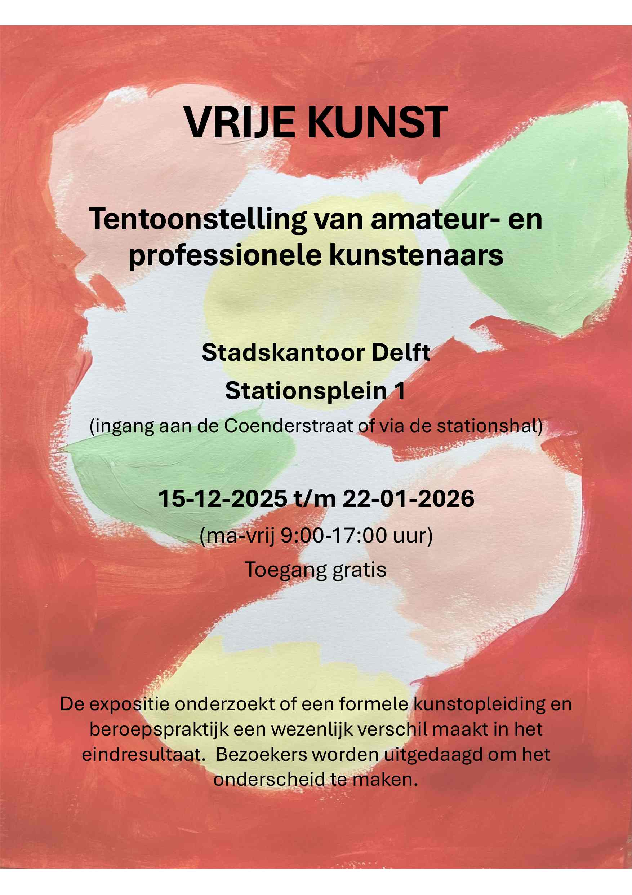
Vrije Kunst Website ↗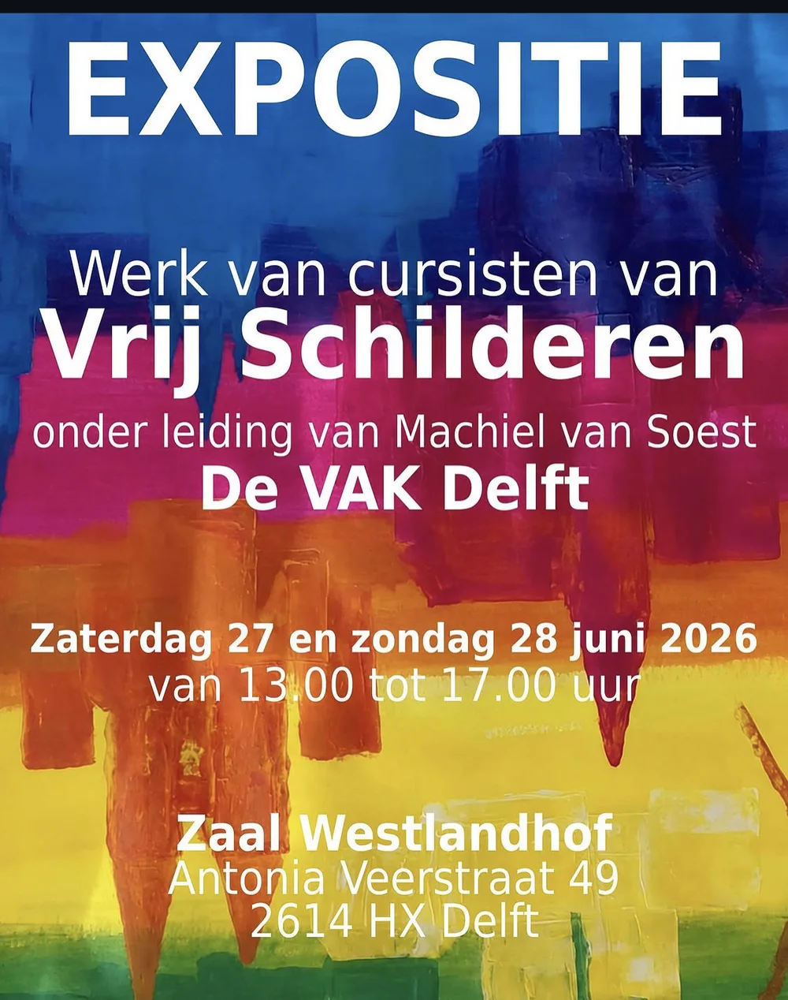
Vrij schilderen De VAK Delft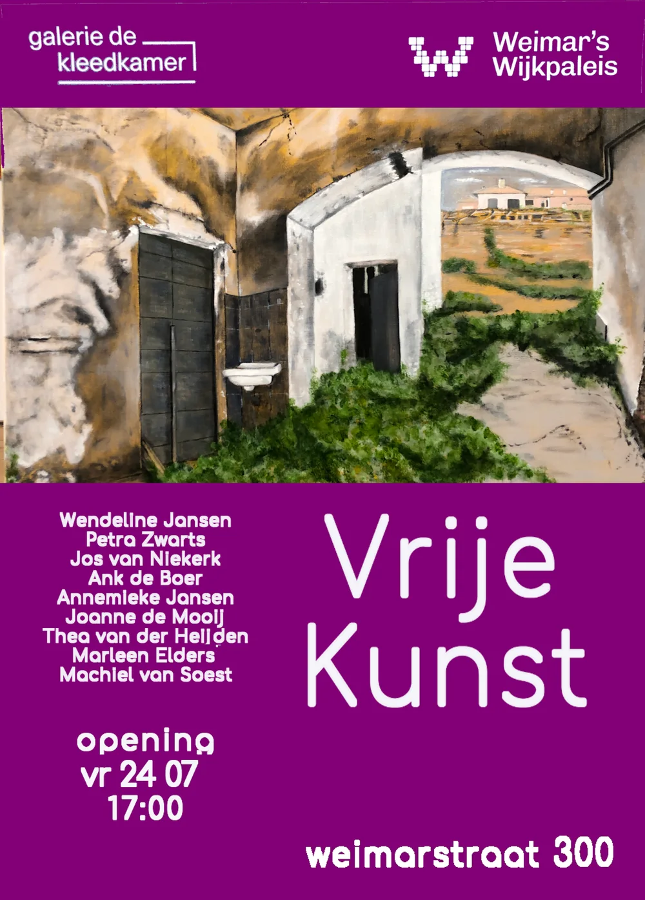
Vrije Kunst – Wijkpaleis Website ↗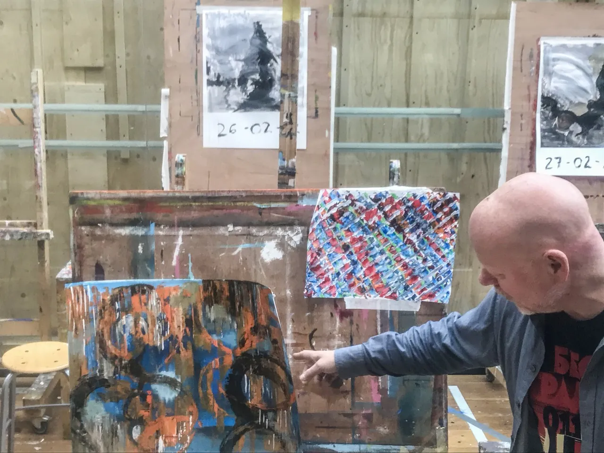
BIC OPEN PDF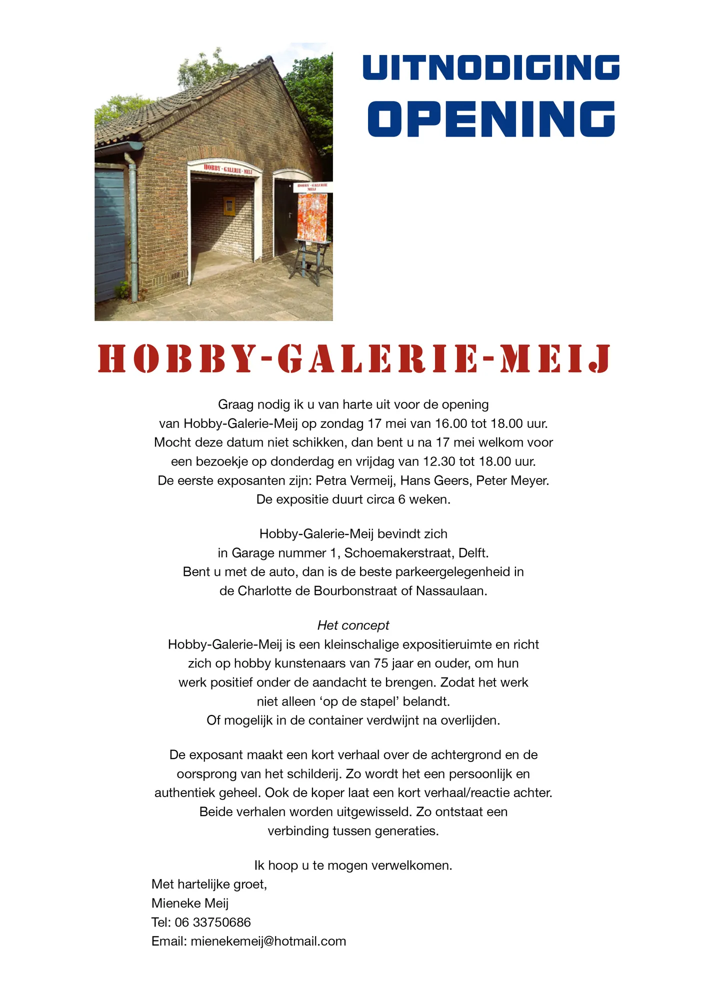
Hobby-Galerie-Meij Uitnodiging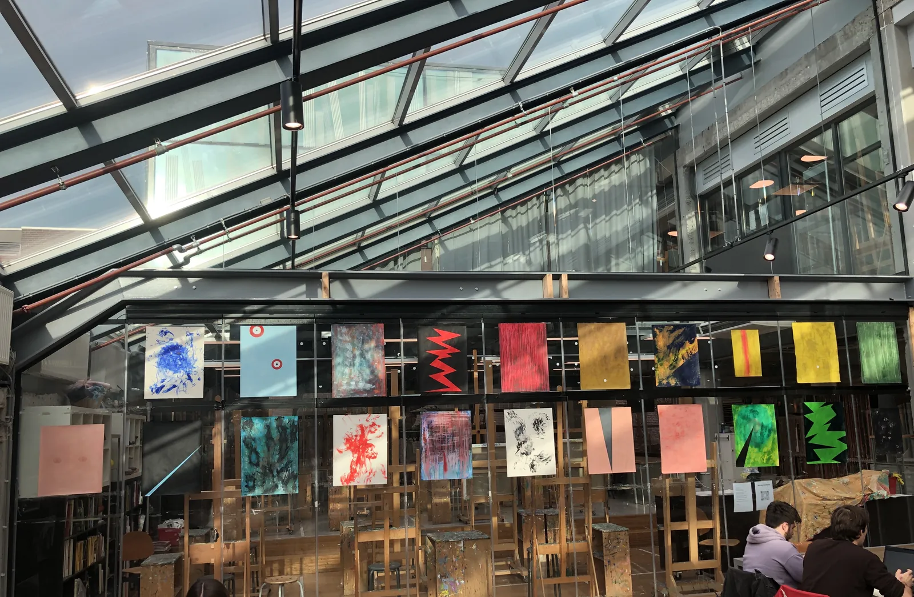
Moniek Website ↗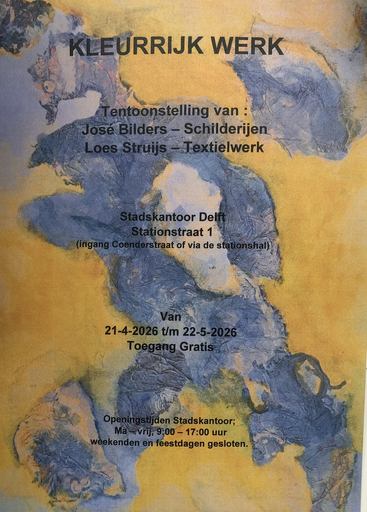
Kleurrijk Werk Uitnodiging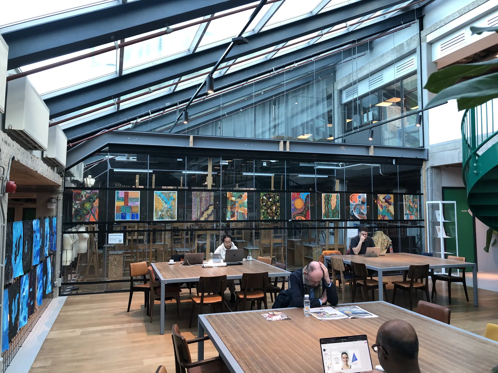
Charlotte Tentoonstelling
Over de docent
Machiel van Soest is beeldend kunstenaar. Kunst maken, professioneel of niet, ziet hij als een fundamentele menselijke uiting. Het vormt de drijfveer achter zijn werk als docent: door te maken kun je je vrij voelen, de wereld onderzoeken en werkelijk leren kijken.
Als kunstenaar en docent zoekt hij de verbinding met de praktijk van amateurs. In dat gedeelde maken wordt zichtbaar dat kunst niet alleen een professioneel domein is, maar een mogelijkheid die voor iedereen openstaat. Juist daarin ligt een bijzondere vrijheid: kunst als persoonlijke vorm van mens-zijn.
De lessen brachten me niet alleen technisch verder, maar hielpen me ook dichter bij mijn eigen beeldtaal en vrijheid te komen. Dank voor de ruimte, het kijken en het geloof in ontwikkeling.
Ik voelde me vanaf het begin veilig en op mijn gemak in de groep. Er was ruimte om jezelf te zijn, vragen te stellen en je vrij te ontwikkelen.
Veel geleerd van de oude meesters. Ik vond het een erg leuke cursus en vooral inspirerend om op een andere manier te leren schilderen.
Dank voor de inspirerende cursus. Ik heb heel veel geleerd, vooral hoe je naar een schilderij kijkt. Leerzaam en gezellig.
Ook van mij veel dank. Het was echt heel inspirerend om deze techniek te leren!
Teken- en schilderlessen, lezingen & workshops verzorgd voor o.a.:
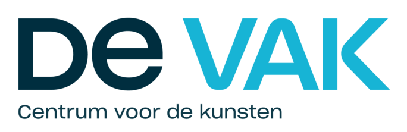
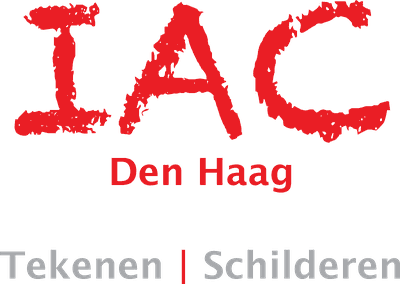
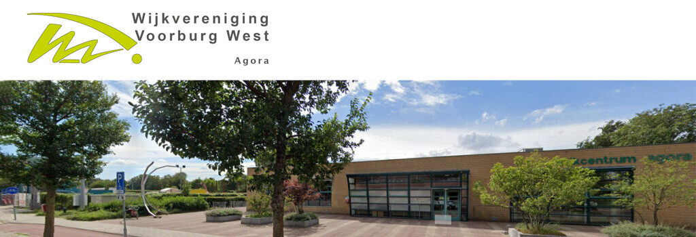
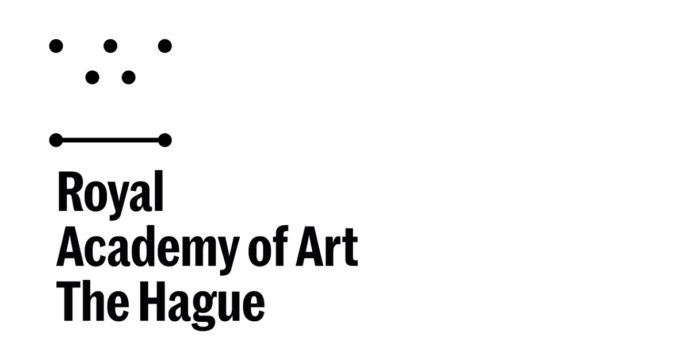
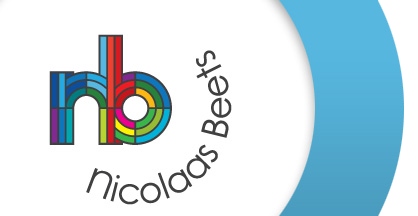
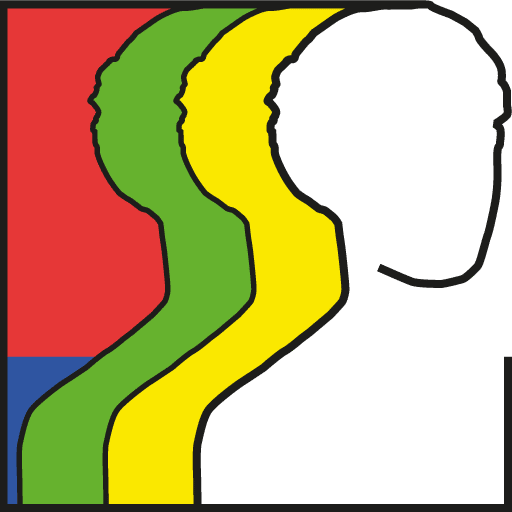
Contact en nieuwsbrief
Mail voor vragen over workshops, online lessen of een proefles. Je kunt je ook per mail aanmelden voor de nieuwsbrief.